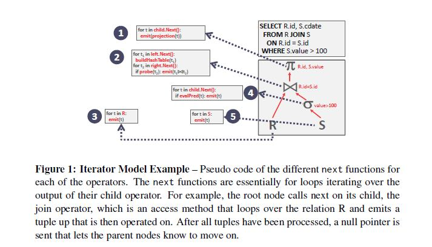
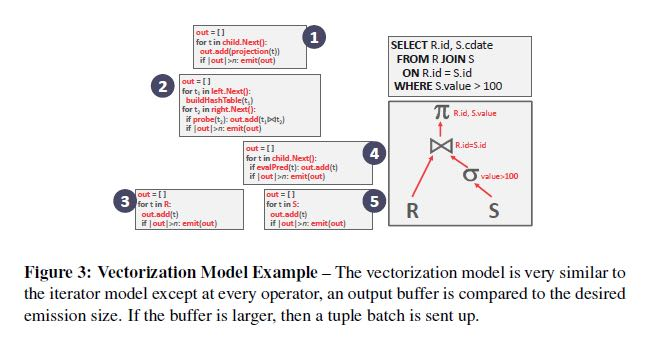
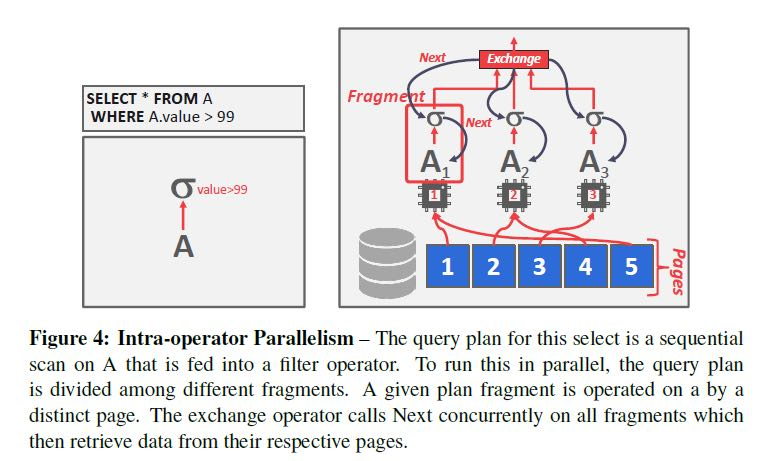
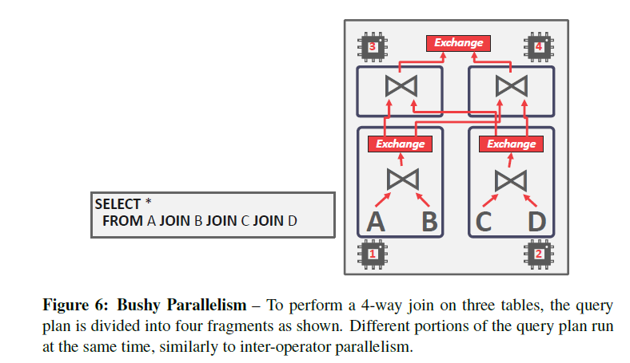

CMU DB: Query Processing
https://15445.courses.cs.cmu.edu/fall2020/schedule.html
Processing Models有下面三种：
- Iterator Model. (aka. volcano model) 工作起来有点类似pipeline的方式，每个stage提供一个next方法，然后不断地去获取tuple/record. 但是某些operator需要得到所有的结果才能开始提供next数据，比如order by, subqueries, joins, 这些operators也被称为pipeline breakers. 这种模型常见于Disk DMBS
- Materialization Model. 每个stage都拿到所有的数据才进行返回，这种模型常见于Mem DBMS. 想象一下如果数据全部都在内存里面的，那么使用pipeline的作用其实就不太大了。
- Vectorization Model. 这个模式算是1和2的hybrid方案，方案1是每次emit 1个tuple, 而方案2是每个emit total result, 这个方案则是emit partial result in batch. 这种模型常见于OLAP, 因为OLAP的模式通常是将分析做水平拆分。
 
Access Methods有下面两种：sequential scan & index scan. 一个是顺序扫描pages(non-index), 一个是顺序扫描index. 顺序扫描有几种可能的优化：
- Prefetching: Fetch the next few pages in advance so that the DBMS does not have to block when accessing each page. （预取pages来躲避延迟）
- Parallelization: Execute the scan using multiple threads/processes in parallel.（使用线程增加并行性）
- Buffer Pool Bypass: The scan operator stores pages that it fetches from disk in its local memory instead of the buffer pool in order to avoid sequential flooding. （绕过buffer pool 避免污染buffer pool）
- Zone Map: Pre-compute aggregations for each tuple attribute in a page. The DBMS can then decide whether it needs to access a page by checking its Zone Map first. The Zone Maps for each page are stored in separate pages and there are typically multiple entries in each Zone Map page. Thus, it is possible to reduce the total number of pages examined in a sequential scan. （提供page上的某些数据特征，比如min/max/sum这样）
- Late Materialization: Each operator passes the minimal amount of information needed to the next operator (e.g., record id, offset to record in column). This is only useful in column-store systems (i.e., DSM). （中间阶段使用record id而不是record本身，减少不必要的数据读取）
- Heap Clustering: Tuples are stored in the heap pages using an order specified by a clustering index.（不太明白是什么东西？？？）
Parallelism:
- Inter-Query Parallelism. 不同的线程去负责不同的query
- Intra-Query Parallelism. 对于一个query如何提供并行性
- Intra-Operator P(Horizontal) 对于单个operator 进行基于数据上的拆分，比如select * from A > 99. 我们可以拆分成为多个sub-operators, [99<A<=150, 150<A<=200,200<A] 或者是基于pages进行拆分。然后在上层将这些sub-operators的结果进行组合，通常包括gather, repartition(aka spark repartition), distribute(split a single input stream to multiple output streams)
- Inter-Operator P(Vertical) 将所有的operators进行分组，每个thread负责一个组里面的所有operators
- Bushy 和上面的inter-operator差不多，但是作者认为有必要单独提出来，因为这个东西在文献中非常常见。
- I/O Parallelism
- Multi-Disk/RAID(Redundant Array of Inexpensive/Independent Disk)
- Database Partitioning. 不同的table放在不同的设备上，以及log file放在单独设备上
- Logical Partitioning. 按照columns进行拆分(vertical)或者是按照rows进行拆分(horizontal). 大部分OLAP使用的columnar storage这两点都使用上了。
 